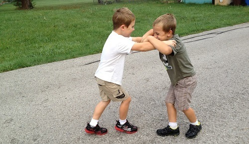

< < < Back
5 Things I Will Teach My Future Son – Return Of Kings
Ideally, every new generation should surpass the former. In reality we know that’s not always the case. In fact, it’s seems like humanity is just getting less capable and more fragile for every generation. But if I have a son, he’s not going to become some pussy SJW like his peers. I won’t allow it!
As I grow older and experience more and more of life, I realize that my childhood did little to prepare me for it. I had a pretty sheltered life when I was still staying at home, and my parents probably wanted that for me. But the unintended result was that I became spoiled without even knowing it. Reality hit me hard when I left the nest and had to care for myself.
Hopefully I won’t have a kid for many years. But when I do, I know I need to teach my son some things that set him up to succeed on his own. He won’t like me being stern and saying that I know what’s best for him, but as an adult he will probably thank me for hardening him early on.
As for my daughter, I expect her mother to teach her the things she needs to know to be a lady. Here’s what my son will learn from me.
1. Beat up other kids

There’s only so much you can do to prepare yourself for a real fight. It’s one thing to fight in a ring with padded gloves and rules, and another thing to stand up to a big bully on the schoolyard. When you feel that blood pumping and anger rising inside of you, ready to do real harm to somebody, it’s like you become another person.
I can teach my son some basic techniques of punching, kicking and blocking. But more importantly, I will tell him to never back down from a fight and never show weakness to an opponent. It’s better to stand your ground, have one fight and then be left alone, than to be a pussy and get pushed around for years until you graduate.
2. Work for a living
I want my son to have a good and comfortable life while at the same time not getting spoiled. My solution is to make him do work at home to earn his place in the household. This wouldn’t be strange at all a hundred years ago or less, but nowadays kids aren’t expected to do anything that’s boring or that they simply don’t feel like doing.
I might need to put away the TV and gaming console in a closet if the kid gets too attached to them.
By doing some menial tasks around the house, the boy will learn that working is sometimes dull, difficult, and tiring, but that it’s necessary to put food on the table and pay the bills. Paying bills and taxes are certainly also things he need to know before he starts making his own money (although by the time my boy is born, I hope most taxes will be a thing of the past).
3. Lose in order to win
Roosh says it well in his book Bang, on the subject of approaching girls with the risk of getting turned down: “Not doing anything may prevent you from failure, but because you make no attempt, it prevents you from success as well.”
If you never try, you never win. And if you don’t lose a number of times—like everyone does at the beginning—you probably won’t learn anything. I want my son to understand that it’s fine to fail as long as he analyzes what he did wrong and does better next time.
I actually didn’t realize this simple truth before I read Roosh’s book. I went through life trying to avoid the risk of failure and thereby missed out on a lot of opportunities. My pride got in the way of improving myself and eventually becoming a winner. I don’t want my son to make the same mistake.
4. Hunt in packs
I don’t want my son to become a lone wolf, sitting behind his computer all day watching porn and playing some MMORPG. He needs to learn social skills, and the best way to do that is to hang around other kids. You might learn cooperation as you play multiplayer games as well, but I hardly think you’ll form long lasting friendships with guys you meet on online fantasy battlefields.
Having loyal friends gets you all kinds of perks. You can rely on them to help you when you’re in need, and they’ll have your back when you pick up girls. The reason why we wanted to have those international meet-ups was precisely to form bonds with masculine men that might come in handy if shit hits the fan. But as you know, SJWs and the media couldn’t let us have that.
5. Distrust authority
Now that there’s an election in the US coming up, you can see how people have a way of putting all their faith and hope on one single person. History shows that people are willing to give up all of their liberty and independence if a guy in a nice suit promises them enough. I don’t want my son to be just a face in the crowd. I want him to be self-reliant and put his own needs first.
He should distrust anyone who craves power, and be skeptical of those who claim to know best. He should even be skeptical of me, his father, and my teachings. Only then can he truly be his own man, and make me proud.
Read More: 10 Things You Must Teach Your Future Daughter